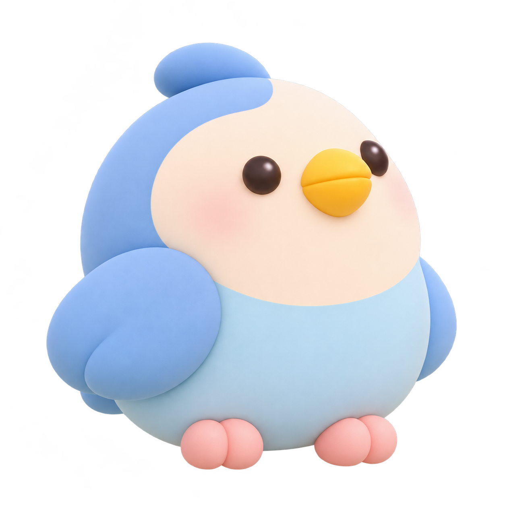
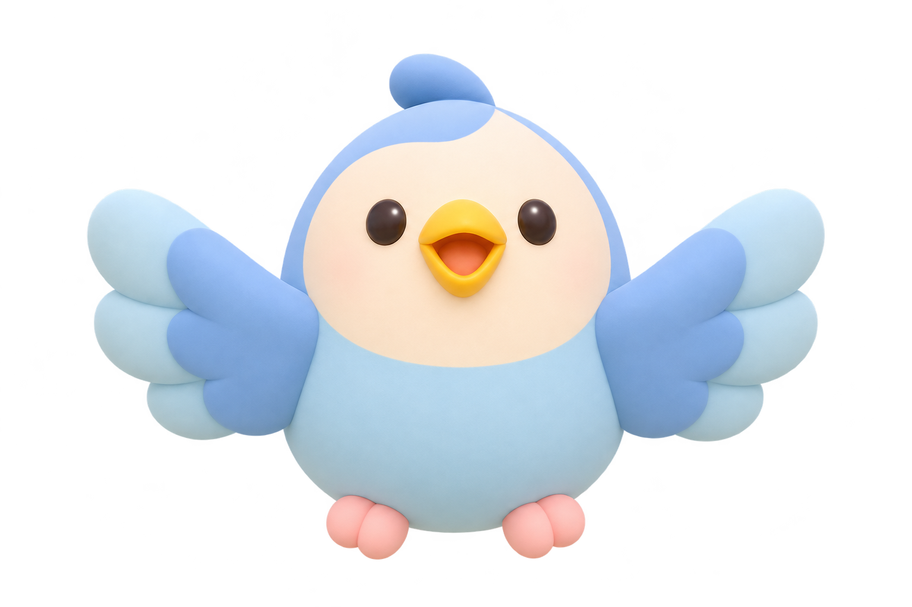

아기새의 첫 비행
나도 하늘을 날고 싶어.
양팔을 활짝 펼쳐 날개를 만들어 주세요!
3초 동안 자세를 유지하면 아기새와 함께 날아올라요!
그대로 유지해 주세요!


잠깐! 상승기류를 만났어요! 양팔을 가슴 앞에 모았다가 활짝 펼쳐보세요!
나 여기 있어요!
팔을 크게 흔들어 주세요
나도 하늘을 날고 싶어.
3초 동안 자세를 유지하면 아기새와 함께 날아올라요!
그대로 유지해 주세요!